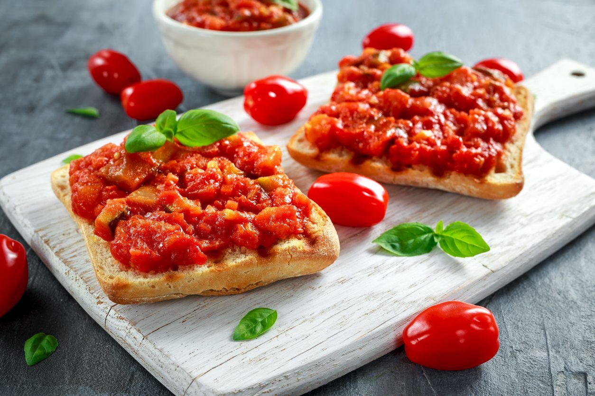

Prep Time:
20 mins
20 mins
Cook Time:
5 mins
5 mins
Additional Time:
10 mins
10 mins
Total Time:
35 mins
35 mins
Servings:
12
12
Ingredients
- 8 seeded, chopped roma (plum) tomatoes
- 5 leaves chopped fresh basil
- 2 cloves minced garlic
- 1 pinch dried oregano
- 1 dash crushed red pepper
- 1 pinch salt
- 1 pinch ground black pepper
- 1 tablespoon olive oil
- 1 (1 pound) loaf French or Italian-style bread
Directions
Step 1
Preheat the oven broiler.
Step 2
Combine tomatoes, basil, garlic, oregano, red pepper, salt, pepper, and olive oil in a mixing bowl. Use more olive oil, if necessary, to coat entire mixture. Allow mixture to sit for 10 minutes.
Step 3
Slice bread to 1/2-inch thickness; arrange on a baking sheet in a single layer.
Step 4
Place the baking sheet under the preheated broiler until bread slices are lightly browned, about 1 minute per side.
Step 5
Remove the baking sheet from the oven. Spread tomato mixture on each piece of toasted bread. Return to the oven and broil until tomato mixture is hot but not cooked, 2 to 3 minutes.
Nutrition Facts(per serving)
127
Calories
Calories
2g
Fat
Fat
23g
Carbs
Carbs
5g
Protein
Protein
© 2023 Food&Cook. All Rights Reserved.
Design by Pabudu Gihan